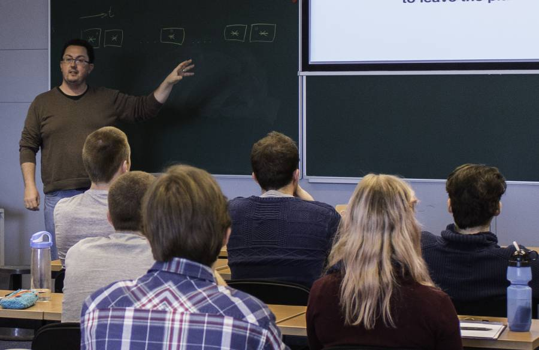

Teaching
Matthew Kenworthy teaching in 2015.I enjoy teaching, especially when I can break down a difficult topic into simpler parts and explain how it all fits back together as a whole. Relating abstract concepts to more everyday experiences means that I typically use props to convey concepts, such as tone generators to demonstrate heterodyne radio receivers, and wooden marble games to explain how digital cameras work.
My teaching led to a student nomination for a Faculty Award for Education in the Science Faculty in Leiden in 2014.
- Astronomical Telescopes and Instruments in 2016-2020
- Making Better Figures in 2016
- High Contrast Imaging in 2021, 2019, 2017 and 2015
- Optics and Instruments in 2015
- Astronomical Telescopes and Instruments in 2014
- Modern Onderzoek in 2013, 2012 and 2011
- Detection of Light in 2014, 2012 and 2011
- NOVA Fall School on Exoplanets in 2013
- ACAO Summer School in December 2012